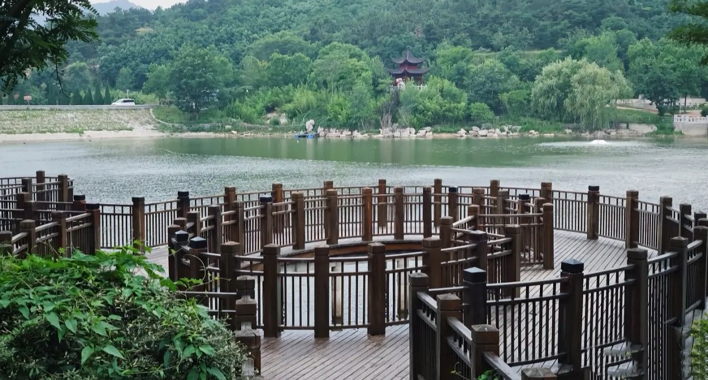
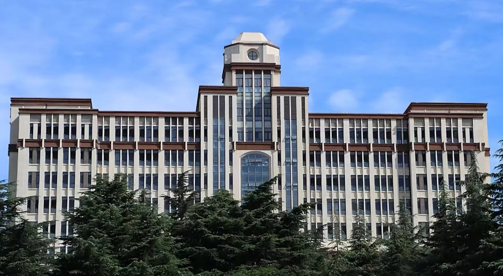
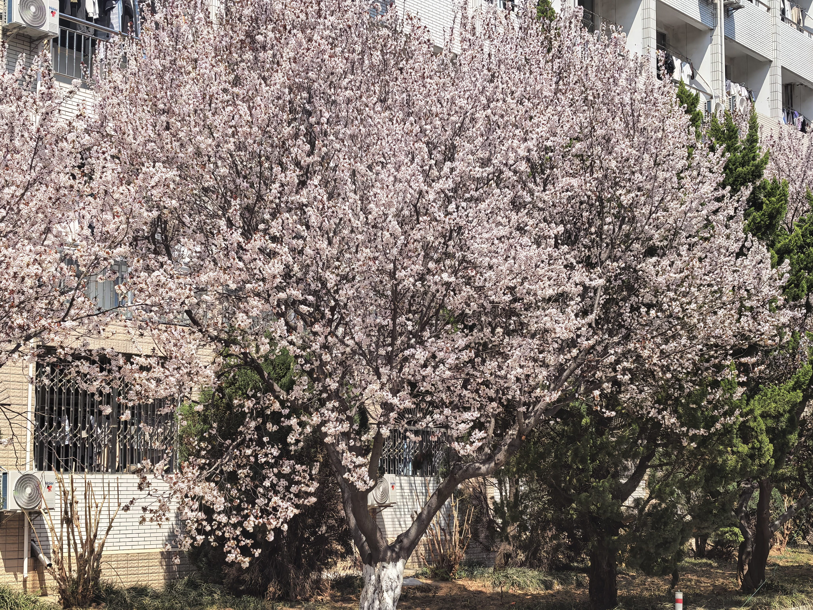

春华校园的自然风光，是一首藏在四季里的温柔诗。春日里，樱花大道的粉白花瓣随风轻舞，落在青石板路上，铺成一条浪漫的花径，风里裹着青草与花香的气息，每一次呼吸都满是生机；夏日的梧桐浓荫如盖，蝉鸣声声里，阳光透过叶隙洒下斑驳的光影，池塘里的荷花亭亭玉立，蜻蜓停在花苞上，勾勒出夏日最灵动的模样；秋日的银杏林是校园里最动人的风景，金黄的叶片簌簌落下，踩在上面沙沙作响，整个校园都被染上温暖的色调；冬日的雪落满枝头，教学楼、操场都裹上一层银装，静谧而纯粹，仿佛时间都慢了下来。无论是清晨薄雾里的校园，还是黄昏夕阳下的湖畔，春华的每一处风光，都藏着青春最美好的模样，陪伴着一届又一届学子的成长。
漫步在校园的小径上，总能被不经意间的美好打动。图书馆前的喷泉在阳光下溅起晶莹的水花，映出淡淡的彩虹；操场边的长椅上，总有同学捧着书静静阅读，与周围的绿意融为一体；实验楼后的小花园里，月季、蔷薇次第开放，蝴蝶在花丛中翩跹，为忙碌的学习生活添了一抹治愈的色彩。春华的自然风光，不只是眼中的风景，更是刻在学子们记忆里的温暖，是每次想起校园时，心头泛起的柔软与怀念。


